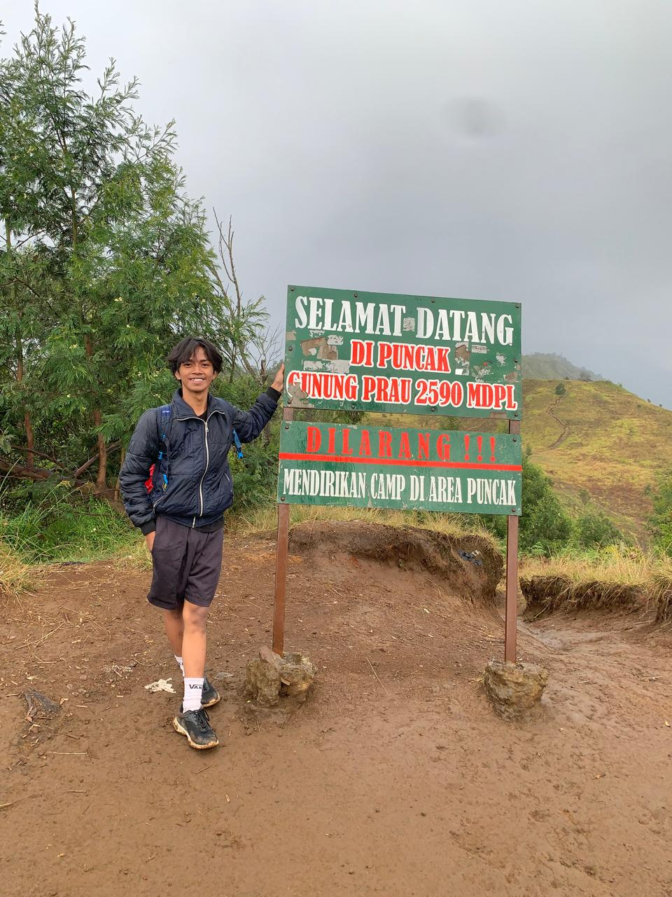

Saya Mahesa Surya Sandika. Seorang mahasiswa IT yang berfokus pada integrasi web modern (CI/CD), eksplorasi kecerdasan buatan, dan merancang kreativitas digital dengan gaya *bold*.

Kombinasi antara logika pemrograman, teori komputasi, dan kreativitas visual yang dinamis.
Pengembangan situs web dinamis dengan pemahaman mendalam tentang arsitektur klien-pelayan.
Otomatisasi penyebaran (deployment) aplikasi agar efisien, aman, dan dapat diskalakan.
AI (SVM, Random Forest), desain logo grafiti, hingga mekanika *tuning* kendaraan AWD.
Membangun arsitektur web modern yang di-host secara efisien melalui saluran pipa CI/CD GitHub ke Cloudflare Pages dan Vercel. Proyek ini memfokuskan pada kecepatan akses, manajemen kebijakan (Access Policies), serta validasi formulir sisi klien dan pelayan menggunakan JavaScript dan PHP.
Lihat ProyekBerfokus pada pemahaman algoritma kompleks, struktur data, pengembangan perangkat lunak berbasis web, dan kecerdasan buatan.
Membangun fondasi penalaran logis, matematika, dan awal mula ketertarikan terhadap eksplorasi dunia digital dan desain grafis.
Pembentukan karakter dasar dan nilai edukasi awal.